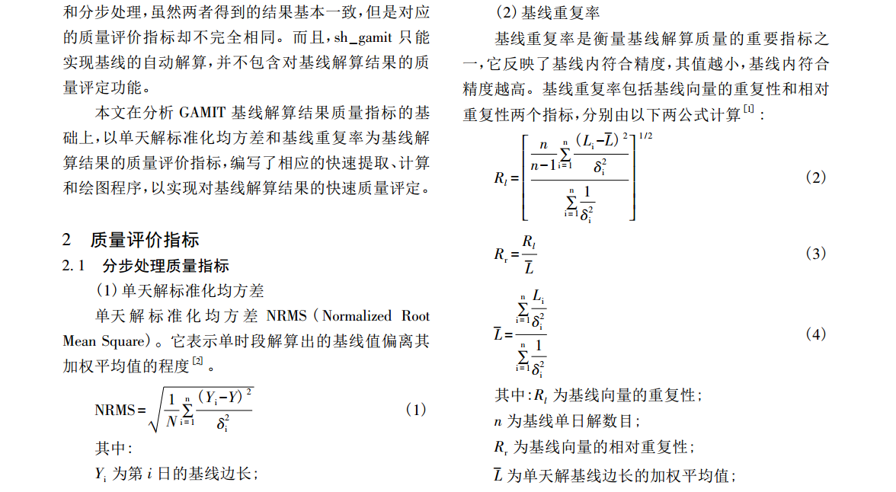

GAMIT基线重复性分析脚本
文章目录
GAMIT/GLOBK高精度GNSS解算软件得到的基线结果质量的评价有一个重要的指标——基线重复性。本文利用matlab编写求取基线重复性的脚本。 后期使用Matlab脚本发现bug，如果每天的基线数量不一致会报错，且运行速度太慢。改用python重写，修改bug。
数学模型
参考文献：[1]吕成亮,王晓珅.GAMIT基线解算质量指标分析[J].城市勘测,2015(06):59-62.

Matlab脚本 BaseRep.m
1 2 3 4 5 6 7 8 9 10 11 12 13 14 15 16 17 18 19 20 21 22 23 24 25 26 27 28 29 30 31 32 33 34 35 36 37 38 39 40 41 42 43 44 45 46 47 48 49 50 51 52 53 54 55 56 57 58 59 60 61 62 63 64 65 66 67 68 69 70 71 72 73 74 75 76 77 78 79 80 81 82 83 84 85 86 87 88 89 90 91 92 93 94 95 96 97 98 99 100 101 102 103 104 105 106 107 108 109 110 111 112 113 114 115 116 117 118 119 120 121 122 123 124 125 126 127 128 129 130 131 132 133 134 135 136 137 138 |
%--------------------------------------------------------------------------
% function: Baseline repeatability analysis
% by: Ren Yingying, Tongji Univerity
% email gsir_ying@163.com
% date: 2018/10/28
%--------------------------------------------------------------------------
% usage: ready ofile.list 'bash command: ls o* > ofile.list'
% now run
%--------------------------------------------------------------------------
clc;clear;
ofilelist = textread('ofile.list','%s');
[mlist,nlist] = size(ofilelist);
dataxyz=[];
dataneu=[];
% get xyz baseline lines
for i = 1:mlist
ofile = ofilelist{i};
fid=fopen(ofile,'r');
mline = 0;
while ~feof(fid)
strline = fgetl(fid);
temp = strfind(strline,'X X ');% only fixed-solution
if (~isempty(temp))
mline = mline + 1;
dataxyz{i,mline} = strline;
end
end
fclose(fid);
end
% get neu baseline lines
for i = 1:mlist
ofile = ofilelist{i};
fid=fopen(ofile,'r');
mline = 0;
while ~feof(fid)
strline = fgetl(fid);
temp = strfind(strline,'X N ');% only fixed-solution
if (~isempty(temp))
mline = mline + 1;
dataneu{i,mline} = strline;
end
end
fclose(fid);
end
[basetime,basenum] = size(dataxyz);
basexyz = [];
% get baseline name
for j=1:basenum
site{j} = dataxyz{1,j}(1:10);
end
% get baseline xyz data, calculate baserep
for j=1:basenum
for i=1:basetime
temp = dataxyz{i,j};
basexyz(j,i,1) = str2double (temp (22:36));
basexyz(j,i,2) = str2double (temp (39:48));
basexyz(j,i,3) = str2double (temp (50:64));
basexyz(j,i,4) = str2double (temp (67:76));
basexyz(j,i,5) = str2double (temp (78:92));
basexyz(j,i,6) = str2double (temp (95:104));
basexyz(j,i,7) = str2double (temp (106:120));
basexyz(j,i,8) = str2double (temp (123:133));
end
x = basexyz(j,:,1);
y = basexyz(j,:,3);
z = basexyz(j,:,5);
l = basexyz(j,:,7);
px = 1./(basexyz(j,:,2).^2);
py = 1./(basexyz(j,:,4).^2);
pz = 1./(basexyz(j,:,6).^2);
pl = 1./(basexyz(j,:,8).^2);
xbar = sum(px.*x)/sum(px);
sgmx = sqrt(sum(px.*(x-xbar).^2)/sum(px));
ybar = sum(py.*y)/sum(py);
sgmy = sqrt(sum(py.*(y-ybar).^2)/sum(py));
zbar = sum(pz.*z)/sum(pz);
sgmz = sqrt(sum(pz.*(z-zbar).^2)/sum(pz));
lbar = sum(pl.*l)/sum(pl);
rl = sqrt(basetime/(basetime-1)*sum(pl.*(l-lbar).^2)/sum(pl));
rr = rl/lbar;
res(j,1) = sgmx;
res(j,2) = sgmy;
res(j,3) = sgmz;
res(j,4) = rl;
res(j,5) = rr;
end
% get baseline neu data, calculate baserep, wmean,nrms,wrms
for j=1:basenum
for i=1:basetime
temp = dataneu{i,j};
baseneu(j,i,1) = str2double (temp (22:36));
baseneu(j,i,2) = str2double (temp (39:48));
baseneu(j,i,3) = str2double (temp (50:64));
baseneu(j,i,4) = str2double (temp (67:76));
baseneu(j,i,5) = str2double (temp (78:92));
baseneu(j,i,6) = str2double (temp (95:104));
baseneu(j,i,7) = str2double (temp (106:120));
baseneu(j,i,8) = str2double (temp (123:133));
end
x = baseneu(j,:,1);
y = baseneu(j,:,3);
z = baseneu(j,:,5);
l = baseneu(j,:,7);
px = 1./(baseneu(j,:,2).^2);
py = 1./(baseneu(j,:,4).^2);
pz = 1./(baseneu(j,:,6).^2);
pl = 1./(baseneu(j,:,8).^2);
xbar = sum(px.*x)/sum(px);
sgmx = sqrt(sum(px.*(x-xbar).^2)/sum(px));
ybar = sum(py.*y)/sum(py);
sgmy = sqrt(sum(py.*(y-ybar).^2)/sum(py));
zbar = sum(pz.*z)/sum(pz);
sgmz = sqrt(sum(pz.*(z-zbar).^2)/sum(pz));
lbar = sum(pl.*l)/sum(pl);
rl = sqrt(basetime/(basetime-1)*sum(pl.*(l-lbar).^2)/sum(pl));
rr = rl/lbar;
res(j,6) = sgmx;
res(j,7) = sgmy;
res(j,8) = sgmz;
res(j,9) = rl;
res(j,10) = rr;
end
% R = a+bL
%***************************************************************plot ploy
% get baserep result in BaseRep_res.txt
fid=fopen('BaseRep_res.txt','w');
fprintf(fid,'%s %s %s %s %s %s %s %s %s\r\n','BaseName ','X ',...
'Y ','Z ','N ','E ','U ','L ','RL');
for j=1:basenum
fprintf(fid,'%s %f %f %f %f %f %f %f %d\r\n',site{j},res(j,1),...
res(j,2),res(j,3),res(j,6),res(j,7),res(j,8),res(j,9),res(j,10));
end
fclose(fid);
open('BaseRep_res.txt') |
Matlab脚本使用方法
利用bash终端工具生成GAMMIT基线解算的o文件列表，然后使用Malab直接运行脚本即可。
1 2 |
cd work
ls o* > ofile.list |
生成结果如下
1 2 3 4 |
BaseName X Y Z N E U L RL
BJFS_SHAO 0.002576 0.003717 0.003039 0.001897 0.002726 0.004178 0.000647 6.108449e-10
BJFS_URUM 0.001783 0.004473 0.007446 0.006297 0.001809 0.005484 0.002529 1.064979e-09
SHAO_URUM 0.002229 0.007996 0.010408 0.007362 0.003236 0.008774 0.002384 7.391489e-10 |
Python脚本 BaseRep.py
1 2 3 4 5 6 7 8 9 10 11 12 13 14 15 16 17 18 19 20 21 22 23 24 25 26 27 28 29 30 31 32 33 34 35 36 37 38 39 40 41 42 43 44 45 46 47 48 49 50 51 52 53 54 55 56 57 58 59 60 61 62 63 64 65 66 67 68 69 70 71 72 73 74 75 76 77 78 79 80 81 82 83 84 85 86 87 88 89 90 91 92 93 94 95 96 97 98 99 100 101 102 103 104 105 106 107 108 109 110 111 112 113 114 115 116 117 118 119 120 121 122 123 124 125 126 127 128 129 130 131 132 133 134 135 136 137 138 139 140 141 142 143 144 145 146 147 148 149 150 151 152 153 154 155 156 157 158 159 160 161 162 163 164 165 166 167 168 169 170 171 172 173 174 175 |
# python3.7
# coding=utf-8
#------------------------------------------------------------------------------
# function: GAMIT ofile baseline repeatability analysis
# by: Ren Yingying, Tongji Univerity
# email gsir_ying@163.com
# date: 2018/11/14
#------------------------------------------------------------------------------
# usage: reday ofile content includes ofiles
# now run
#------------------------------------------------------------------------------
# ref:
#------------------------------------------------------------------------------
import sys
import os
from numpy import *
# get all fix result
filelist = os.listdir('ofile')
count_file = 0
str_xyz = ''
str_neu = ''
for file in filelist :
count_file += 1
file_object = open('ofile\\' + file)
for line in file_object.readlines():
if (line.find('Correlations (X-Y,X-Z,Y-Z)') > 0):
str_xyz += line
if (line.find('Correlations (N-E,N-U,E-U)') > 0):
str_neu += line
file_object.close()
file_object1 = open('xyz.txt','w')
file_object1.write(str_xyz)
file_object1.close()
file_object1 = open('neu.txt','w')
file_object1.write(str_neu)
file_object1.close()
# sort all fix result
file_object2 = open('xyz.txt',"r+");
lines = file_object2.readlines();
lines.sort();
for line in lines:
file_object2.seek(0)
file_object2.writelines(lines)
file_object2.close();
file_object2 = open('neu.txt',"r+");
lines1 = file_object2.readlines();
lines1.sort();
for line in lines1:
file_object2.seek(0)
file_object2.writelines(lines1)
file_object2.close();
name = []
name.append(lines[0][0:9])
sum_lines= min(len(lines),len(lines1))
for i in range(1,sum_lines):
if (lines[i][0:9] != lines[i-1][0:9]):
name.append(lines[i][0:9])
# calculate each baseline repeatability
res = zeros((len(name),8))
count_name = -1
for site in name:
count_name += 1
dataxyz = []
dataneu = []
for i in range(0,sum_lines):
if (lines[i][0:9] == site):
dataxyz.append(lines[i])
if (lines[i][0:9] == site):
dataneu.append(lines1[i])
row = len(dataxyz)
x = zeros(row)
sx = zeros(row)
y = zeros(row)
sy = zeros(row)
z = zeros(row)
sz = zeros(row)
l = zeros(row)
sl = zeros(row)
n = zeros(row)
sn = zeros(row)
e = zeros(row)
se = zeros(row)
u = zeros(row)
su = zeros(row)
for i in range(row):
dataxyzline = dataxyz[i].split()
dataneuline = dataneu[i].split()
temp = []
temp.append(float(dataxyzline[3]))
temp.append(float(dataxyzline[5]))
temp.append(float(dataxyzline[7]))
temp.append(float(dataxyzline[9]))
temp.append(float(dataxyzline[11]))
temp.append(float(dataxyzline[13]))
temp.append(float(dataxyzline[15]))
temp.append(float(dataxyzline[17]))
temp.append(float(dataneuline[3]))
temp.append(float(dataneuline[5]))
temp.append(float(dataneuline[7]))
temp.append(float(dataneuline[9]))
temp.append(float(dataneuline[11]))
temp.append(float(dataneuline[13]))
x[i] = temp[0]
sx[i] = temp[1]
y[i] = temp[2]
sy[i] = temp[3]
z[i] = temp[4]
sz[i] = temp[5]
l[i] = temp[6]
sl[i] = temp[7]
n[i] = temp[8]
sn[i] = temp[9]
e[i] = temp[10]
se[i] = temp[11]
u[i] = temp[12]
su[i] = temp[13]
px = 1 / (sx ** 2)
py = 1 / (sy ** 2)
pz = 1 / (sz ** 2)
pl = 1 / (sl ** 2)
pn = 1 / (se ** 2)
pe = 1 / (sn ** 2)
pu = 1 / (su ** 2)
xbar = sum(px * x) / sum(px)
sgmx = sqrt(sum(px * (x - xbar) ** 2) / sum(px))
ybar = sum(py * y) / sum(py)
sgmy = sqrt(sum(py * (y - ybar) ** 2) / sum(py))
zbar = sum(pz * z) / sum(pz)
sgmz = sqrt(sum(pz * (z - zbar) ** 2) / sum(pz))
lbar = sum(pl * l) / sum(pl);
rl = sqrt( row / (row - 1) * sum(pl * (l-lbar) ** 2) / sum(pl))
rr = rl / lbar
nbar = sum(pn * n) / sum(pn)
sgmn = sqrt(sum(pn * (n - nbar) ** 2) / sum(pn))
ebar = sum(pe * e) / sum(pe)
sgme = sqrt(sum(pe * (e - ebar) ** 2) / sum(pe))
ubar = sum(pu * u) / sum(pu)
sgmu = sqrt(sum(pu * (u - ubar) ** 2) / sum(pu))
res[count_name][0] = sgmx
res[count_name][1] = sgmy
res[count_name][2] = sgmz
res[count_name][3] = rl
res[count_name][4] = rr
res[count_name][5] = sgmn
res[count_name][6] = sgme
res[count_name][7] = sgmu
# write result in file
count_name = -1
str_res = 'BaseName X Y Z N E U L RL\n'
for site in name:
count_name += 1
str_res += site + ' ' + str('%.5f'% res[count_name][0]) + ' ' + str('%.5f'% res[count_name][1]) + ' '\
+ str('%.5f'% res[count_name][2]) +' ' + str('%.5f'% res[count_name][5]) + ' ' \
+ str('%.5f'% res[count_name][6]) + ' ' + str('%.5f'% res[count_name][7]) + ' ' \
+ str('%.5f'% res[count_name][3]) + ' ' + str('%.4e'% res[count_name][4]) + '\n'
file_object3 = open('BaseRep.out','w')
file_object3.write(str_res)
file_object3.close()
# delele some temp files
os.remove('neu.txt')
os.remove('xyz.txt') |
python脚本BaseRep.py修改
不断学习，不断改进吧，一个小程序的bug就这么多，坚持下去。
# python3.7 # coding=utf-8 #------------------------------------------------------------------------------ # function: GAMIT ofile baseline repeatability analysis # by: Ren Yingying, Tongji Univerity # email gsir_ying@163.com # date: 2018/11/14 #------------------------------------------------------------------------------ # usage: reday ofile content includes ofiles # now run #------------------------------------------------------------------------------ # ref: #------------------------------------------------------------------------------ # modify： 2018-11-21 Calculate separately(XYZ or NEU) import sys import os from numpy import * # select print NEU or XYZ result，0 —— XYZ， 1 —— NEU isneu = 1 # get all fix result if (isneu == 0): str_find1 = 'X X' str_find2 = 'Correlations (X-Y,X-Z,Y-Z)' else: str_find1 = 'X N' str_find2 = 'Correlations (N-E,N-U,E-U)' filelist = os.listdir('ofile') count_file = 0 str_xyz = '' for file in filelist : count_file += 1 file_object = open('ofile\\' + file) for line in file_object.readlines(): if ((line.find(str_find1) > 0) and (line.find(str_find2) > 0)): str_xyz += line file_object.close() file_object1 = open('xyz.txt','w') file_object1.write(str_xyz) file_object1.close() # sort all fix result file_object2 = open('xyz.txt',"r+"); lines = file_object2.readlines(); lines.sort(); for line in lines: file_object2.seek(0) file_object2.writelines(lines) file_object2.close(); name = [] name.append(lines[0][0:9]) sum_lines= len(lines) for i in range(1,sum_lines): if (lines[i][0:9] != lines[i-1][0:9]): name.append(lines[i][0:9]) # calculate each baseline repeatability res = zeros((len(name),8)) count_name = -1 for site in name: count_name += 1 dataxyz = [] for i in range(0,sum_lines): if (lines[i][0:9] == site): dataxyz.append(lines[i]) row = len(dataxyz) x = zeros(row) sx = zeros(row) y = zeros(row) sy = zeros(row) z = zeros(row) sz = zeros(row) l = zeros(row) sl = zeros(row) for i in range(row): dataxyzline = dataxyz[i].split() temp = [] temp.append(float(dataxyzline[3])) temp.append(float(dataxyzline[5])) temp.append(float(dataxyzline[7])) temp.append(float(dataxyzline[9])) temp.append(float(dataxyzline[11])) temp.append(float(dataxyzline[13])) temp.append(float(dataxyzline[15])) temp.append(float(dataxyzline[17])) x[i] = temp[0] sx[i] = temp[1] y[i] = temp[2] sy[i] = temp[3] z[i] = temp[4] sz[i] = temp[5] l[i] = temp[6] sl[i] = temp[7] px = 1 / (sx ** 2) py = 1 / (sy ** 2) pz = 1 / (sz ** 2) pl = 1 / (sl ** 2) xbar = sum(px * x) / sum(px) sgmx = sqrt(sum(px * (x - xbar) ** 2) / sum(px)) ybar = sum(py * y) / sum(py) sgmy = sqrt(sum(py * (y - ybar) ** 2) / sum(py)) zbar = sum(pz * z) / sum(pz) sgmz = sqrt(sum(pz * (z - zbar) ** 2) / sum(pz)) lbar = sum(pl * l) / sum(pl); rl = sqrt( row / (row - 1) * sum(pl * (l-lbar) ** 2) / sum(pl)) rr = rl / lbar res[count_name][0] = sgmx res[count_name][1] = sgmy res[count_name][2] = sgmz res[count_name][3] = rl res[count_name][4] = rr # write result in file count_name = -1 if (isneu == 0): str_res = 'BaseName X Y Z L RL\n' else: str_res = 'BaseName N E U L RL\n' for site in name: count_name += 1 str_res += site + ' ' + str('%.5f'% res[count_name][0]) + ' ' + str('%.5f'% res[count_name][1]) + ' '\ + str('%.5f'% res[count_name][2]) +' ' + str('%.5f'% res[count_name][3]) + ' '\ + str('%.4e'% res[count_name][4]) + '\n' file_object3 = open('BaseRep.out','w') file_object3.write(str_res) file_object3.close() # delele some temp files os.remove('xyz.txt')
其他
01 本文程序仅对可选择模糊度固定或浮点基线解进行处理。02 其它求解基线重复性的方法会后续发布。
文章作者 GSir
上次更新 2018-11-21